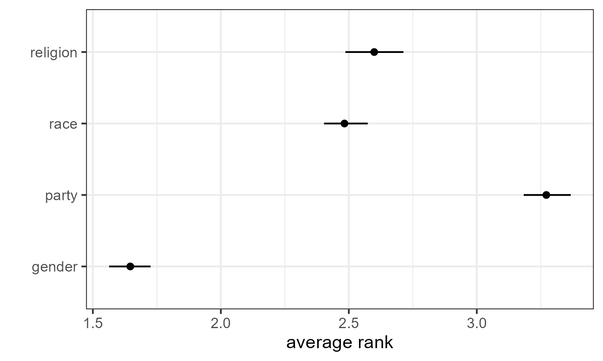

rankingQ implements design-based methods for correcting measurement errors in ranking questions due to random responses. rankingQ allows users to estimate various ranking-based quantities of interest both non-parametrically and parametrically. rankingQ also offers practical tools for detecting the bias and assessing the anchor-ranking question.
For the underlying methodology, see Atsusaka and Kim (2024) (https://osf.io/preprints/osf/3ys8x).
Installation
rankingQ can be installed using the following code:
remotes::install_github(
"sysilviakim/rankingQ",
dependencies = TRUE
)Example
rankingQ assumes a dataset that contains (1) responses to ranking questions with J items and (2) a binary indicator for whether each respondent provides the correct answer to the anchor-ranking question—auxiliary ranking question whose correct answer(s) are known to researchers. For example, the package features a dataset identity, which stores responses to a question that asks respondents to rank four sources of identity (partisanship, race, gender, and religion) based on their relative importance.
library(rankingQ)
library(tidyverse)
data("identity")
head(identity)
# app_party app_religion app_gender app_race
# 1 1 4 2 3
# 2 1 4 2 3
# 3 3 4 1 2
# 4 1 4 2 3
# 5 4 1 3 2
# 6 3 1 2 4
# anc_house anc_neighborhood anc_city anc_state
# 1 1 2 3 4
# 2 1 2 3 4
# 3 1 2 3 4
# 4 1 2 3 4
# 5 1 3 2 4
# 6 1 2 3 4
# anc_correct_identity s_weight
# 1 1 0.8439999
# 2 1 0.8861603
# 3 1 2.9644222
# 4 1 0.9866697
# 5 0 1.7573136
# 6 1 0.4692241Target ranking question
Ranking data are expected to be in the wide format, where multiple columns are used to represent different items and their values represent the items’ marginal ranks. In identity, the four sources of identity are app_party, app_religion, app_gender, and app_race. For example, the first respondent ranked party first, gender second, race third, and religion fourth (i.e., “1423” is the respondent’s outcome).
Anchor ranking question
To perform bias correction, the data must have what we call the anchor ranking question. The anchor question is an auxiliary ranking question that looks similar to the target question, whose “correct” answer is known to researchers. For example, identity has responses to the anchor question that asked respondents to rank order four levels of government: house, state, municipal, and school board. These responses are included in anc_house, anc_neighborhood, anc_city, and anc_state. Here, the correct answer is assumed to be “1234.” Based on theses responses, we code an indicator variable (anc_correct_identity) that takes 1 if respondents offer the correct answer and 0 otherwise.
Direct Bias Correction via imprr_direct
rankingQ has two primary functions to perform bias correction. First, imprr_direct improves ranking data by applying direct bias correction to several classes of quantities of interest.
To apply the bias correction, we specify our dataset (data), the number of items (J), the prefix of column names that contain J items for the target ranking questions, and the prefix of column names for the anchor ranking questions. When survey weights are available, they can be included by specifying weight in the function.
# Rename the items with a common prefix
identity <- identity %>%
rename(app_identity_1 = app_party,
app_identity_2 = app_religion,
app_identity_3 = app_gender,
app_identity_4 = app_race)
# Perform bias correction
out_direct <- imprr_direct(
data = identity,
J = 4,
main_q = "app_identity",
anc_correct = "anc_correct_identity"
)View Results: Estimated Proportion of Random Responses
The first output of imprr_direct is the estimated proportion of random responses. The vector est_p_random returns the estimated proportion along with the lower and upper ends of its corresponding 95% confidence interval.
# Estimated proportion of random responses with a 95% CI
out_direct$est_p_random
# mean lower upper
# 1 0.3153146 0.2864261 0.3481958View Results: Estimated Quantities of Interest
The other output is the bias-corrected estimates of four classes of ranking-based quantities, including
- average ranks
- pairwise ranking probabilities
- top-k ranking probabilities
- marginal ranking probabilities
The output tibble qoi stores the estimated quantities and their corresponding 95% CIs.
# View the results based on the quantity of interest
out_direct$qoi %>%
filter(qoi == "average rank")
# A tibble: 4 × 6
# # Groups: item, qoi [4]
# item qoi outcome mean lower upper
# <chr> <chr> <chr> <dbl> <dbl> <dbl>
# 1 party average rank Avg: app_identity_1 3.27 3.18 3.37
# 2 religion average rank Avg: app_identity_2 2.60 2.49 2.71
# 3 gender average rank Avg: app_identity_3 1.65 1.56 1.73
# 4 race average rank Avg: app_identity_4 2.48 2.40 2.57
# View the results based on the item
out_direct$qoi %>%
filter(item == "party")
# # A tibble: 11 × 6
# # Groups: item, qoi [4]
# item qoi outcome mean lower upper
# <chr> <chr> <chr> <dbl> <dbl> <dbl>
# 1 party average rank Avg: app_identit… 3.27 3.18 3.37
# 2 party marginal ranking Ranked 1 0.0409 0.0123 0.0729
# 3 party marginal ranking Ranked 2 0.152 0.121 0.181
# 4 party marginal ranking Ranked 3 0.303 0.264 0.343
# 5 party marginal ranking Ranked 4 0.505 0.460 0.552
# 6 party pairwise ranking v. app_identity_2 0.355 0.306 0.399
# 7 party pairwise ranking v. app_identity_3 0.106 0.0672 0.143
# 8 party pairwise ranking v. app_identity_4 0.268 0.227 0.312
# 9 party top-k ranking Top-1 0.0409 0.0123 0.0729
# 10 party top-k ranking Top-2 0.308 0.269 0.347
# 11 party top-k ranking Top-3 0.726 0.678 0.776 For example, one can visualize the result for average ranks as follows:
# Plot the result
out_direct$qoi %>%
filter(qoi == "average rank") %>%
ggplot(aes(x = mean, y = item)) +
geom_point() +
geom_linerange(aes(xmin = lower, xmax = upper)) +
theme_bw() +
xlab("average rank") +
ylab("")
Weighting-Based Bias Correction via imprr_weight
The alternative methods for bias correction is based on the idea of inverse-prbability weighting. imprr_weight improves ranking data by computing bias correction weights, which can be used to correct for the bias in the inverse-probability weighting framework. The same arguments previously used can be used as follows:
# Perform bias correction
out_weights <- imprr_weights(
data = identity,
J = 4,
main_q = "app_identity",
anc_correct = "anc_correct_identity"
)View Results: Estimated Weights
The output of imprr_weights contains the set of weights for all possible ranking profiles with J items. For example, when J = 4, the set has {1234, 1243, ..., 4321} and each profile now has an estimated weight.
# View the estimated weights
out_weights$weights
# ranking w
# 1 1234 0.0000000
# 2 1243 0.0000000
# 3 1324 0.0000000
# 4 1342 0.0000000
# 5 1423 1.0158812
# 6 1432 0.4078355
# 7 2134 0.8582397
# 8 2143 0.8070574
# 9 2314 0.7456387
# 10 2341 0.0000000
# 11 2413 1.1316994
# 12 2431 0.5767371
# 13 3124 1.0238295
# 14 3142 0.5400194
# 15 3214 0.8251218
# 16 3241 0.0000000
# 17 3412 1.2733020
# 18 3421 1.0314721
# 19 4123 1.2628998
# 20 4132 1.1045545
# 21 4213 1.0388263
# 22 4231 0.4999637
# 23 4312 1.2711103
# 24 4321 1.0593130View Results: Estimated PMF with Raw Data and Bias Corrected Data
imprr_weight also returns the estimated probability mass function of all ranking profile before and after bias correction.
# View the estimated PMF with raw data and weighted data
> out_weights$corrected_pmf %>%
select(ranking, prop, prop_renormalized)
# ranking prop prop_renormalized
# 1 1234 -0.0003526508 0.000000000
# 2 1243 -0.0044081345 0.000000000
# 3 1324 -0.0003526508 0.000000000
# 4 1342 -0.0098154461 0.000000000
# 5 1423 0.0483131539 0.046944603
# 6 1432 0.0077583167 0.007538549
# 7 2134 0.0293875632 0.028555111
# 8 2143 0.0253320795 0.024614506
# 9 2314 0.0212765957 0.020673901
# 10 2341 -0.0111672740 0.000000000
# 11 2413 0.0753497120 0.073215306
# 12 2431 0.0131656283 0.012792690
# 13 3124 0.0496649818 0.048258138
# 14 3142 0.0118138004 0.011479155
# 15 3214 0.0266839074 0.025928041
# 16 3241 -0.0030563066 0.000000000
# 17 3412 0.1659221817 0.161222159
# 18 3421 0.0510168097 0.049571673
# 19 4123 0.1537557306 0.149400343
# 20 4132 0.0672387446 0.065334095
# 21 4213 0.0523686376 0.050885208
# 22 4231 0.0104619725 0.010165620
# 23 4312 0.1632185259 0.158595089
# 24 4321 0.0564241213 0.054825814Merge Estimated Weights with Original Data
# Turn the results into a tibble
tibble_w <- out_weights$weights %>% tibble()
# Merge the weights back to the original data
identity_w <- identity %>%
unite(ranking, starts_with("app_identity"), sep = "", remove = F) %>%
left_join(tibble_w, by = "ranking") %>%
select(w, everything()) %>%
mutate(item = case_when(item == "app_identity_1" ~ "party",
item == "app_identity_2" ~ "religion",
item == "app_identity_3" ~ "gender",
item == "app_identity_4" ~ "race"))
# head(identity_w)
# w ranking party religion gender race anc_house anc_neighborhood
# <dbl> <chr> <dbl> <dbl> <dbl> <dbl> <dbl> <dbl>
# 1 1.02 1423 1 4 2 3 1 2
# 2 1.02 1423 1 4 2 3 1 2
# 3 1.27 3412 3 4 1 2 1 2
# 4 1.02 1423 1 4 2 3 1 2
# 5 1.10 4132 4 1 3 2 1 3
# 6 1.02 3124 3 1 2 4 1 2Analysis
The estimated weights can be used to perform any analyses. For example, to estimate the average rank of party, one can leverage linear regression as follows:
library(estimatr)
lm_robust(party ~ 1, identity_w, weights = w) %>% tidy()
# term estimate std.error statistic p.value conf.low
# 1 (Intercept) 3.220388 0.02790142 115.4202 0 3.165641
# conf.high df outcome
# 1 3.275135 1081 partyWhile this illustrative example provides a valid point estimate, its confidence interval does not account for the estimation uncertainty around the estimated weights. Thus, in practice, imprr_weights must be used along with bootstrapping, such as the one available in rsample (example).
References
Atsusaka, Y., & Kim, S.S. (2024). Addressing Measurement Errors in Ranking Questions for the Social Sciences. Political Analysis (conditionally accepted). https://osf.io/preprints/osf/3ys8x